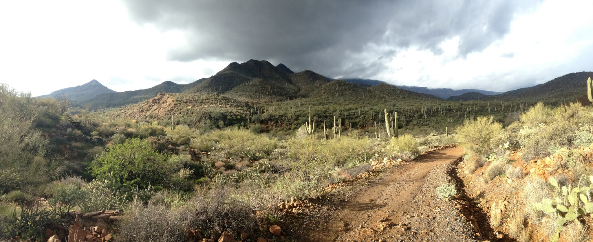
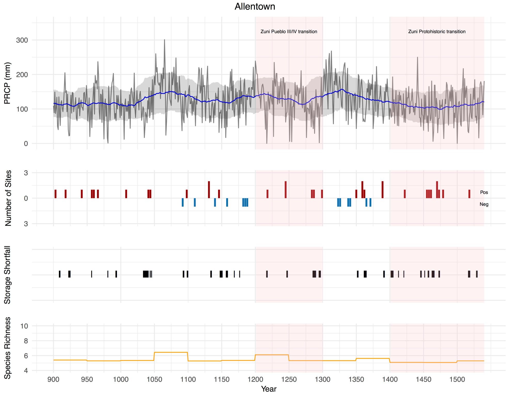
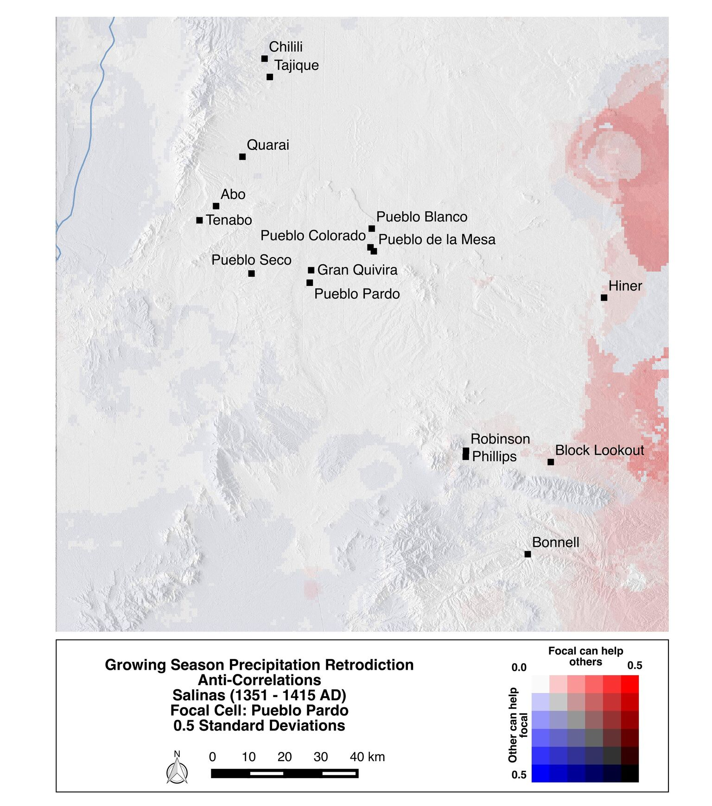

Long-Term Vulnerabilities and Transformations Project
I am a member of the NSF funded Long-term Vulnerability and Transformation Project(LTVTP), an interdisciplinary, multiple institution-based collaborative project focused on developing detailed comparisons between major social transformations throughout the pre-Hispanic U.S. Southwest. By evaluating spatial variability in resources and social networks, we construct “risk landscapes” to evaluate the vulnerability or robustness of communities to social transformation in four study regions. My role in this project is to serve both as the GIS and modeling expert, developing models of spatially explicit precipitation, storage shortfall, available wild resources, and social relationships for the Zuni, Salinas, Mimbres, and Hohokam case studies.
Associated Products
Book Chapters
- Strawhacker, Colleen, Grant Snitker, Katherine Spielmann, Maryann Wasiolek, Jonathan Sandor, Ann Kinzig, and Keith Kintigh
2016 - Risk Landscapes and Domesticated Landscapes: Food Security in the Salinas Province. In Landscapes, Mobilities, and Social Transformations: Arriving at the Fifteenth Century in the Pueblo Rio Grande, edited by K. Spielmann, pp. 124–150. University of Arizona Press.
Presentations
- Strawhacker, Colleen, Grant Snitker, Keith Kintigh, Ann Kinzig and Katherine Spielmann
2017 - Measuring Risk to Food Security in the Prehispanic U.S. Southwest: The Salinas Region in the Broader Southwest World. Paper presented at the 82st Annual Meeting of the Society for American Archaeology, Vancouver, B.C.
Software
- Snitker, Grant
2015 - Long-Term Vulnerability and Transformation Project (LTVTP) Anticorrelation Script. R Script version 1.0. Electronic documenthttps://github.com/gsnitker/ LTVTP/LTVTP_anticor.R.